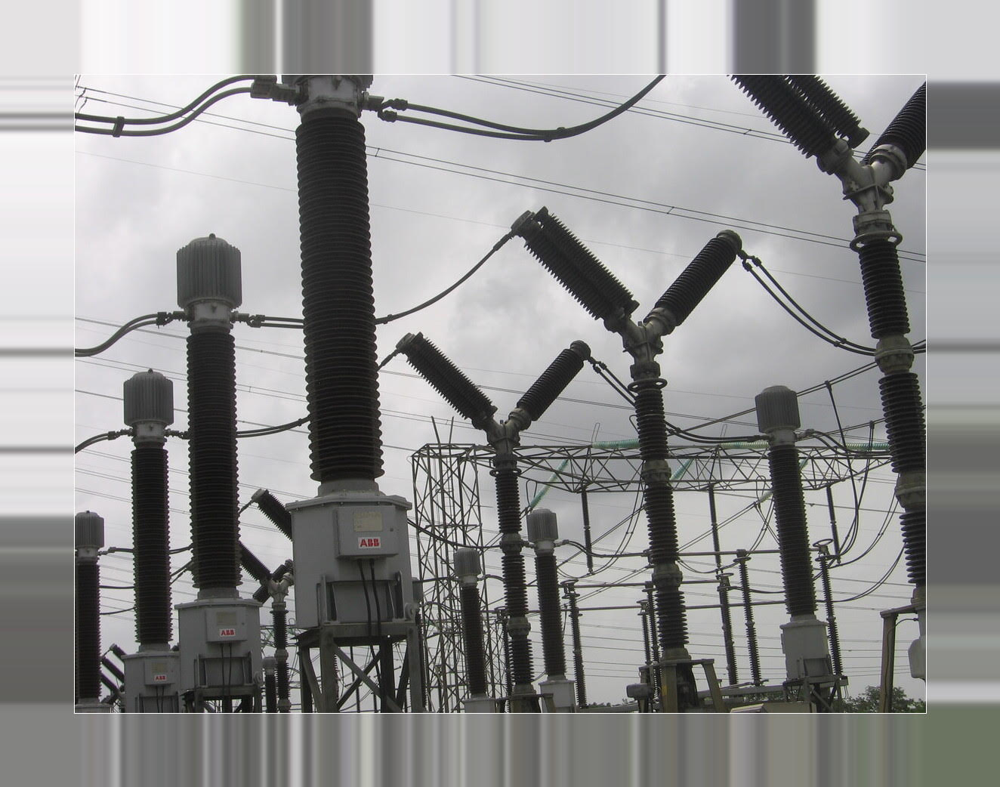
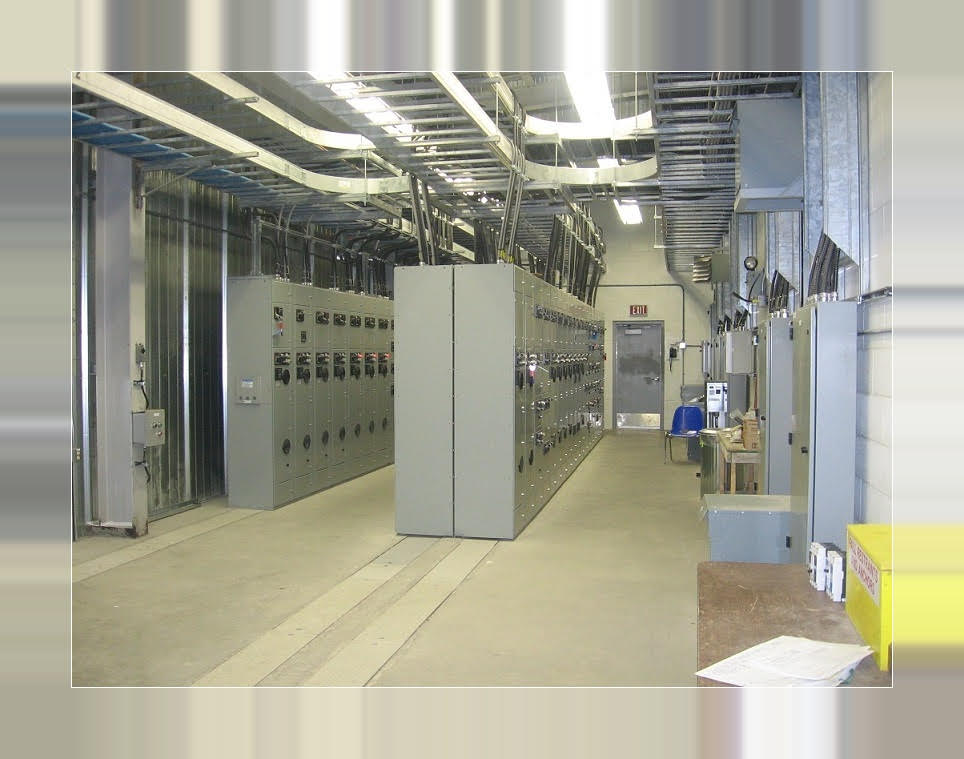
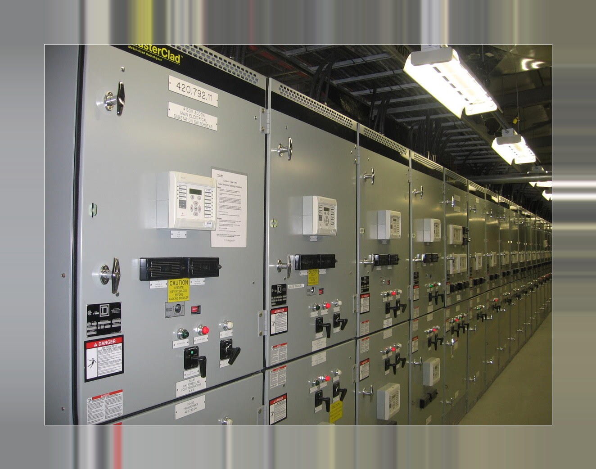
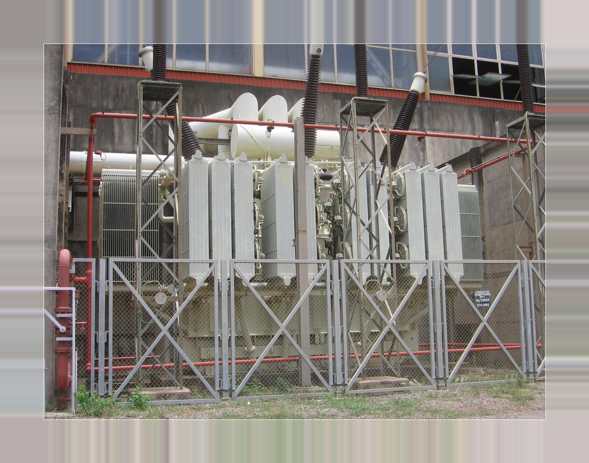
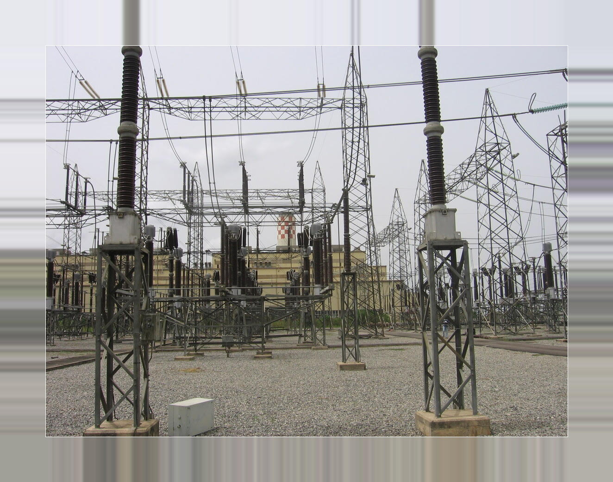

| Industrial Power Distribution - Load study - Power distribution system - Emergency Power System - Switchgear and Motor Control Center (MCC) - Lighting and Communication system - Grounding and Lightning Protection - Cable Tray and Underground Trench |
 |
| Power Generation - Co-Generation Power Plants - Gas Turbine / Combine Cycle Power Plants - Wind Farm and Solar Power Generation - Diesel / Gas Power Generators - Generator Synchronizing Controls - Power connection to Grid |
 |
| Substation and Power Line - Substation Arrangement - Protection and Controls - Grounding and Lightning Protection - Major Equipment - Telecom and SCADA - Power Distribution Lines |
 |
| Power System Study - Load Flow and Short Circuit - Protective Relay Coordination - Big Motor Start and Voltage Drop - Cable Pulling Tension - Ampacity Calculation - Power Quality |
 |
| Industrial instrumentation and Controls - Instrument Specification - PLC Programming - HMI Editing - Control System Configuration - Control Panel Design - P&ID Diagram Preparation |
 |